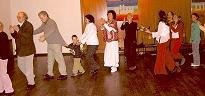
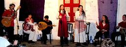
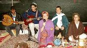
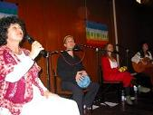
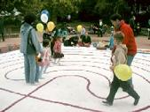
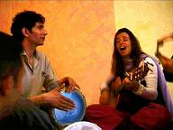
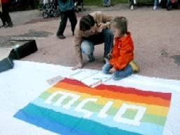

transforming CHECKPOINTS into MEETING-POINTS
| home |
| about |
| work |
| story |
| team |
| schedule |
| links |
| CARAVAN from JERUSALEM to EUROPE, May 2005 |
|
Responding to a genuine and deep interest of our European friends in the situation in Jerusalem and in the work and vision of the All Nations Café - we decided to take the All Nations Caravan to Germany, Switzerland and the UK. First we held a celebration in West Jerusalem, where the performing group included: Ofer, Hilla, Mohammad, Miriam, Vered, Daphna and myself. Vered began by inviting the audience to Stones of Love - a healing ceremony using stones to transform the energy of the place. The first part of the event was a concert of our songs in Hebrew, Arabic and English, followed by Blessings, led by Miriam, where each person in the audience and the group walked up to new people and offered a spontaneous blessing. During the second part the audience joined us in a large circle while we all chanted a Zikr, moved in harmony, meditated, sang, clapped hands and danced together. The energy rose very high, and we continued into the night with a heart dance led by Jeff and a free dance with dj Asaf. A week later we set up a Bedouin style camp at Nabbi Mussa in the West Bank with the help of our Palestinian friend Abdullah. There, apart from the concert and the Stones of Love, we had a Debka dance performance from Hebron, and the first Jerusalem Labyrinth Walk. Conceived by Shoshana and created with the assistance of Daphna, myself, Mae and friends from Germany - this labyrinth was designed with the intention to touch each walkers life and to allow them a sacred space in which to offer their dreams, as well as to connect the spirit of people from all around the world and to invite them to focus their prayers on Jerusalem and the Middle East. A few days before setting off to Europe, we had another Labyrinth Walk, this time in a valley in East Jerusalem in view of the Dome of the Rock. Here, Palestinian children and Israeli adults walked together. On May 3rd, the Caravan team took off to Germany. We arrived at ZEGG, a young creative socio-ecological community in Belzig, near Berlin, on the 60th anniversary of the self-liberation of this town, and were invited to attend an official ceremony in the forest at a site of a former womens work camp. From our first day in Germany we were shown a warm welcome, first class treatment and dedicated and loving hospitality that touched us deeply. On May 4th, Vered held the Stones of Love ceremony, and Miriam had a sharing circle with people from the community. This way both we and our hosts could get a feeling for each other before that evenings concert. That evening was Holocaust Memorial Day in Israel, and we gave a concert at the San Diego Café in ZEGG, in which we also held a memorial ceremony. Vered openly expressed her difficulty, as a second generation of Holocaust survivors, in coming to Germany, and her words deeply touched everyone. We continued the concert with friends from the community who joined us in drumming, singing, playing the piano and dancing sacred dances. We had two pleasant surprises: Our hostess Barbara sang a song in Hebrew with Daphna, and Hagara, collector of songs and dances of all nations, taught us an Israeli dance. On a sadder note, we realized that our team member Muhammad, who was supposed to arrive from Palestine and play the oud during the caravan, could not join us in Germany (later we found out there it was due to a death in his family). On the special date: Thursday, 5.5.5, when Ascension Day and Father's Day were celebrated in Germany, we drove to Prinzhöfte to a Permaculture community near Bremen, where Reeka, a co-founder of the All Nations Café, used to live. We gave a cozy fireside concert to a group of Permaculture designers who live in Germany, Holland and Italy, and as in the first performance, we were deeply moved. We continued to share with the people during the weekend with a Kabbalat Shabbat ceremony on May 6th, Stones of Love, and Labyrinth Walk at a park in the center of Bremen on May 7th. Early on the morning of Sunday May 8th, we drove back to Berlin to be there in time for the 60th Liberation Day events at Brandenburg Tor, where the Berlin Wall used to stand. We were received by the enthusiastic Bernd, Mohammed Herzog, Achim and Gernod, who then took us under his care and invited us to stay in the comfort of the boarding school where he works.
One of the highlights of our stay in Berlin was the Jerusalem Center concert on May 10th, at the time of Israels Memorial Day. Honoring the casualties of war, we stood in silence - Israelis, Palestinians, Syrians, Germans, Japanese, Moroccans and Nigerians - praying for cessation of war and in that moment bringing peace to our world. At the end of our stay in Berlin, I (Dhyan) received the shocking news of my father's unexpected death. After praying about it and talking to my family, I took the decision to stay with the caravan for another week, and then return home. On May 12th, when Israel was celebrating its Independence Day, we arrived in Tübingen, south Germany, where three members arrived from Canada to join the caravan: Kemal, Lorne and Lisa, who was responsible for a significant part of the caravans funding. We were hosted by the beautiful German-Israeli-International Dana, at the Leibniz House, a big self run student home. We held a touching concert and Kabbalat Shabbat with a group of students from different nations, including Libya, Palestine and Brazil, as well as dear Mr. Benedikt, who had attended the opening concert in Jerusalem, came with his wife and friends, one, a sitar player from India. I shared my terrible loss with the audience and Daphna dedicated a song to my father's soul. We also had a first (but not last) chance to hear Kemals lovely voice in a Rap he composed. On the 13th we went to the towns main park, and spread out the Labyrinth in the midst of a playground for children. Their reaction was immediate: many kids, including babies, jumped on the Labyrinth and started running in circles along its path. At some point we held hands with the children and walked to the center, where we sat and some kids sang songs in German. A spontaneous street show was formed and it drew more kids as well as their parents. We sang and collected some coins from the audience, and then sat down on the Labyrinth and shared one-on-one with people who wanted to learn about us and our vision. On Sunday May 15th, Nakba Day, commemorating the Palestinian 1948 catastrophe, we set off to Lausanne, to meet and perform together with friends from Gaza. That day we held the closing Stones of Love ceremony, during which Vered and Miriam were deeply moved, feeling the Earth responding and thanking them. We drove to Switzerland through the Black Forest and Freiburg, where a lovely and ecologically active family invited us for lunch. That evening, in front of a Swiss - Middle Eastern - North African audience we had a concert that was, in the words of Israeli George Rosenberg, Making the impossible possible. It was a collaborative Israeli - Palestinian - Syrian - Iraqi - Swiss production, that gave room to express and reveal, rather than hide, in a constructive way, the actual thoughts and feelings each of us had. On the following day, May 16th, we were hosted by Jutta and Sylvia in the serenity of their communitys home in Basel. Jutta and her singing partner Suzanne joined us with their angelic voices for the closing concert, which we gave at the Open Church, a marvelous cathedral at the center of Basel. We collected a generous donation from the audience for which we are grateful. We could not think of a better venue to end with a Hallelujah, praising and thanking God for the wonder, the immense love and the oneness we experienced in this caravan. The following days, Daphna and I returned to Jerusalem, so did Vered; Miriam went on to tour North America; Lisa, Lorne and Kemal proceeded to London to present the All Nations Café and to hold an art workshop at St. Ethelburga's Centre for Reconciliation and Peace. ConclusionThe personal and the collective, joy and sadness, life and death, were all ceaselessly at play throughout the caravan, and presented a constant challenge for each of us personally, and for the group as a whole, to integrate these paradoxes, by keeping our hearts open and by allowing the whole spectrum of emotions to be expressed. Through this integration, the Divine Providence helped us complete the mission we were sent to achieve: to demonstrate the possibility of different people from different, even hostile, nations to live together in cooperation and sharing. |
DONATE
Listen to the Caravan CD and Order it Online...
CONTACT US
|